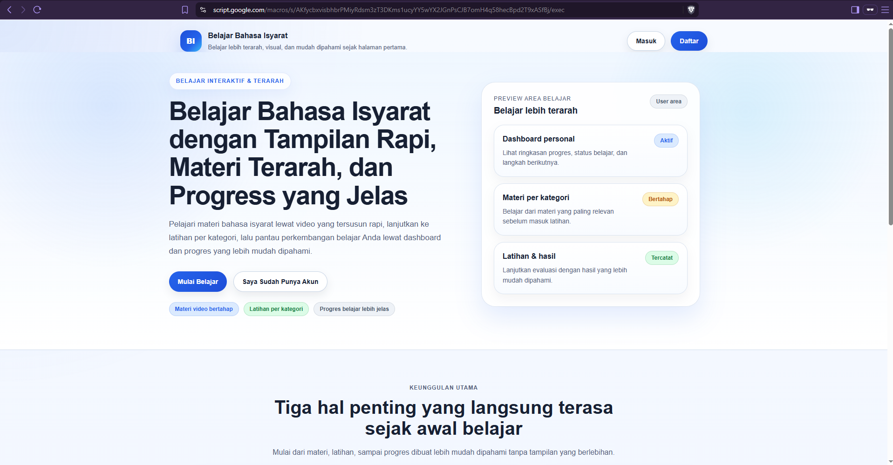
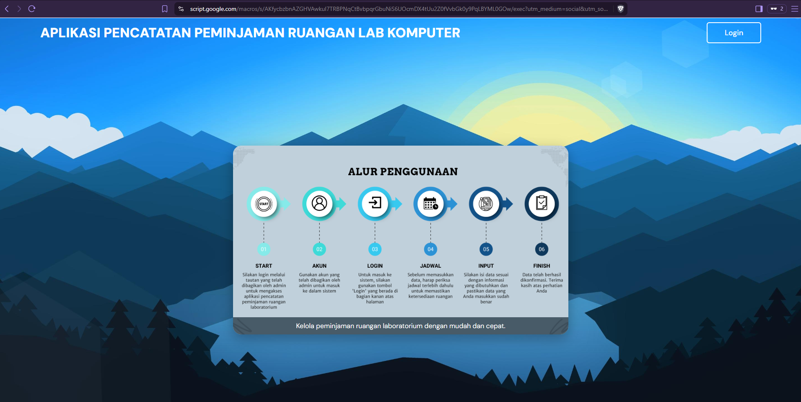
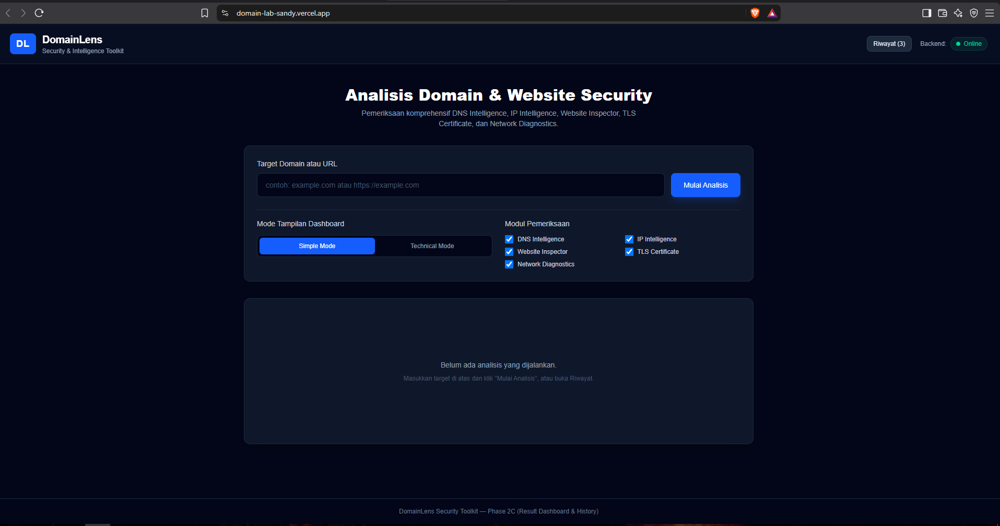
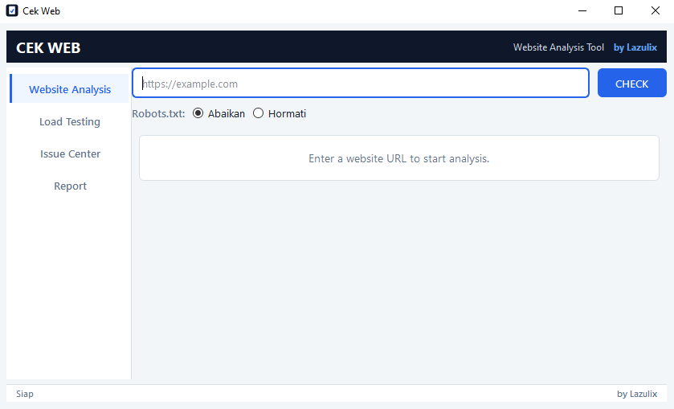
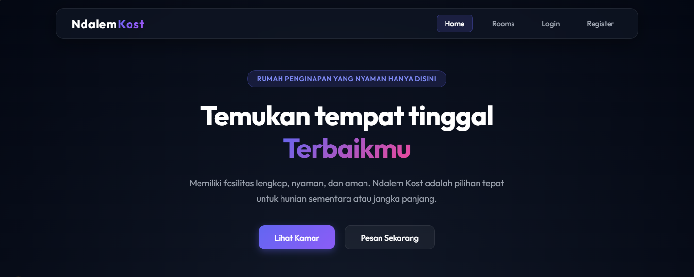

Fresh Graduate Teknik Informatika Universitas Muhammadiyah Surakarta yang antusias dalam pengembangan web, otomasi sistem, dan pembangunan solusi digital yang fungsional serta efisien.
Latar belakang, dedikasi, dan pendekatan profesional.
Saya adalah lulusan baru (Fresh Graduate) Teknik Informatika dari Universitas Muhammadiyah Surakarta dengan ketertarikan mendalam pada pengembangan aplikasi web, pemecahan masalah teknis, dan perancangan sistem yang efisien.
Selama masa kuliah dan magang, saya aktif mengembangkan berbagai project nyata—mulai dari sistem peminjaman berbasis Google Apps Script di Laboratorium FKI UMS hingga aplikasi web mandiri seperti Domain Lens. Saya juga aktif berorganisasi di HIMATIF, mengasah kemampuan komunikasi, kerja sama tim, dan kepemimpinan.
Teknologi dan tools yang saya kuasai.
Rekam jejak profesional dan keaktifan kampus.
Karya skripsi, magang, dan aplikasi web yang telah dikembangkan.

Aplikasi E-Learning berbasis multimedia interaktif untuk pembelajaran bahasa isyarat bagi penyandang tunarungu wicara. Merupakan project Tugas Akhir (Skripsi).

Sistem informasi manajemen dan peminjaman ruangan laboratorium berbasis Google Apps Script. Dikembangkan saat magang di UMS.

Aplikasi web untuk menganalisis dan melacak informasi domain. Sudah di-hosting secara publik di Vercel.

Project mandiri untuk melakukan pemindaian struktur dan informasi halaman web secara lokal.

Platform direktori dan informasi penyewaan kos dengan layout yang informatif, bersih, dan mudah digunakan.
Perjalanan akademis.
Saya siap untuk memulai karier profesional dan berkontribusi di perusahaan Anda. Hubungi simpan kontak atau kirim email untuk diskusi lebih lanjut.
Kirim Email